In this assignment, I go through the process of fabricating a messaging user interface.
As mentioned from my project plan, I wanted to create a 3D representation of a screen-based user interface. I started by digitizing the potential interfaces I wanted on Figma.
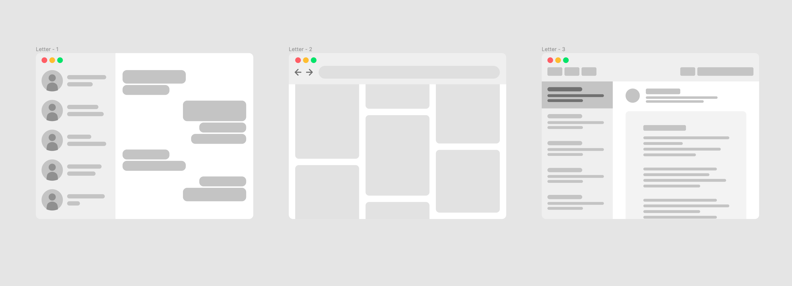Starting with the messaging app, I imported the design into Illustrator (Figma doen't export SVGs well) to ensure the vectors are in the right format and then brought it into Rhino as an SVG.
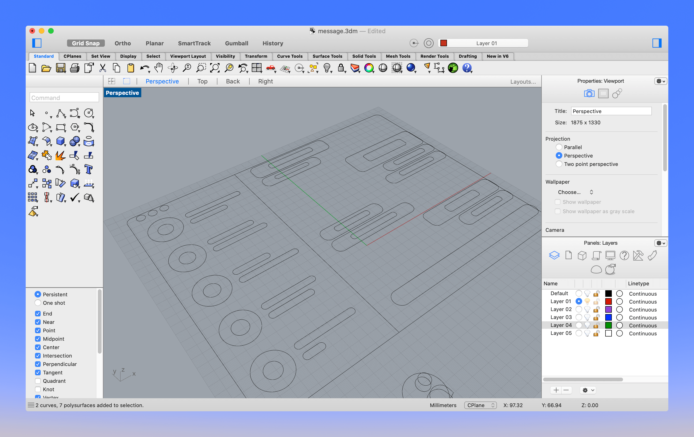Using the SVGs, I then started experimenting with different shapes that each of the UI component.
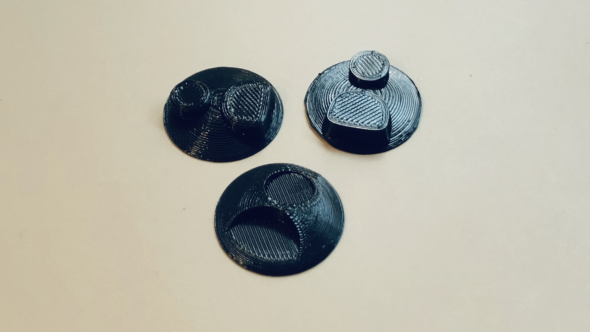I also had to ensure that the stl files are exporting correctly by importing them into Cura. The one thing that took time to figure out was the design of the chat bubbles because they didn't export well into Cura. It took some trial and error on working around different commands in Rhino to get the result right.
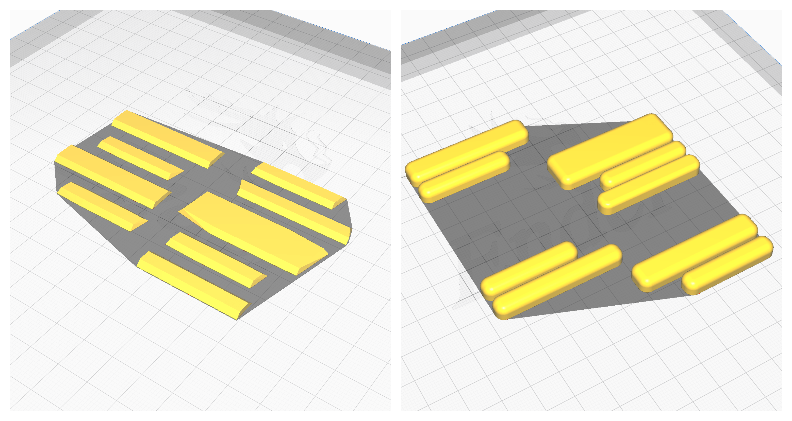The initial plan was to create the components using plaster, but plaster requires a lot more steps including mold designing, mold making, and casting. As an alternative, I decided to try printing everything in white filament.
In terms of the finishing, I experimented with XTC-3D which gave a glossy finish that I didn't like. So I decided to sand them down to a smooth surface, and finish it with spray paint.
Switching to white filament took an unexpected turn when the extrusions just don't play well with my current setup. This led to a lot of bed adhesion problems and ugly prints.
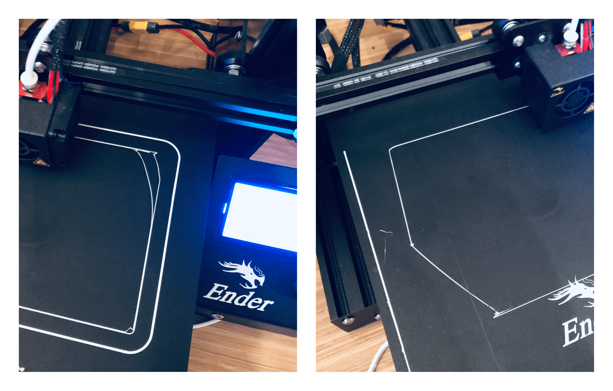 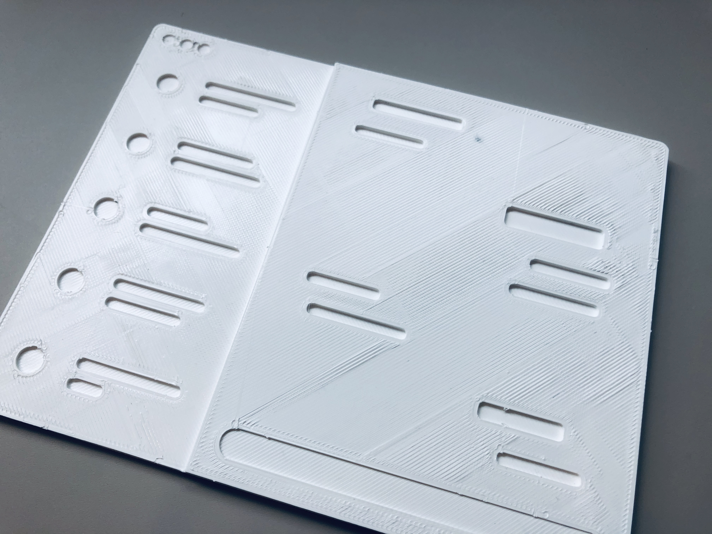Additionally, the extrusion maintained some of the previous filament color, creating an occasional grey patch on my print. After playing around with the initial layer print speed, bed temperature, and multiple prints to remove the remaining black filament, the problems were fixed.
Moving to 3D printing instead of molding and casting made it easier to imagine how to accurately connect the pieces together. The quickest way I did to match the pieces to the base plate is by cutting a dent into each of the pieces and their position on the base plate, and connecting them together by an extruded shape of the dent.
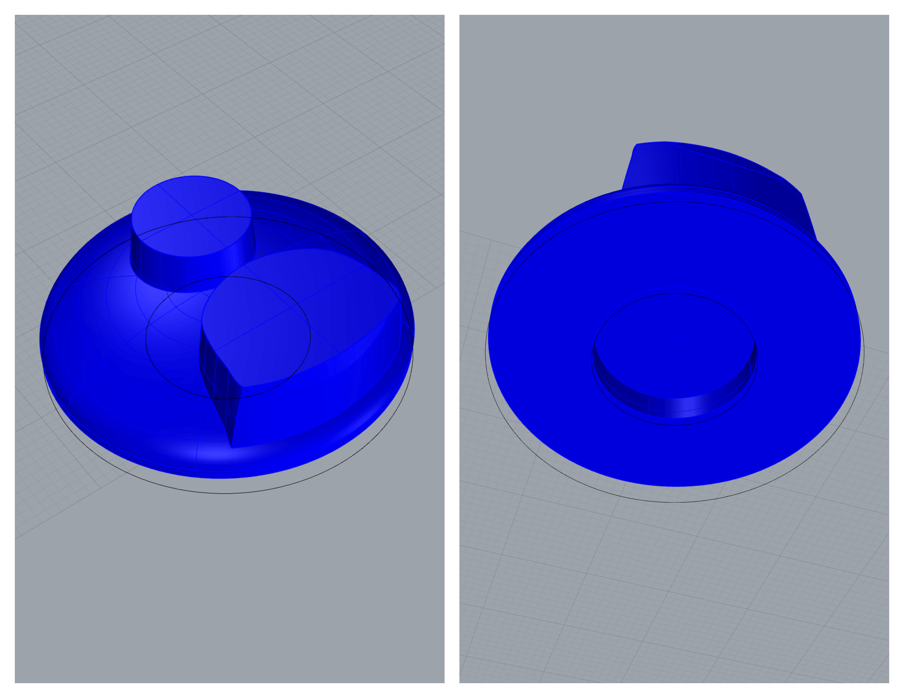 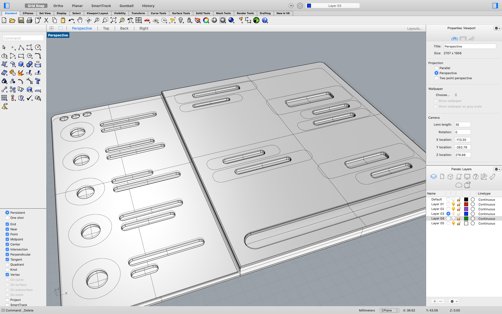 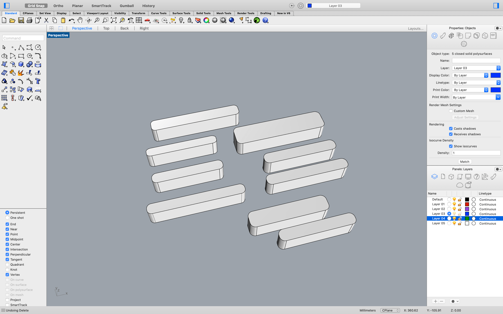After getting all the parts printed, I started sanding the parts with a 400 grit sandpaper.
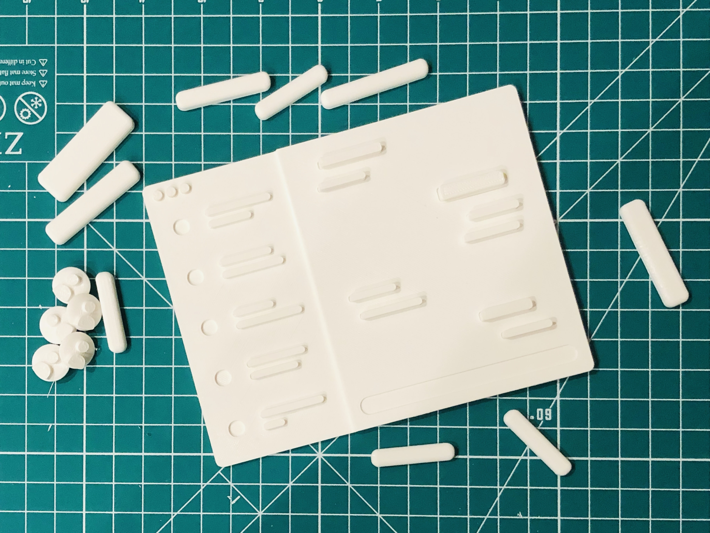I then took the parts outside and sprayed the parts with a Paint & Filler.
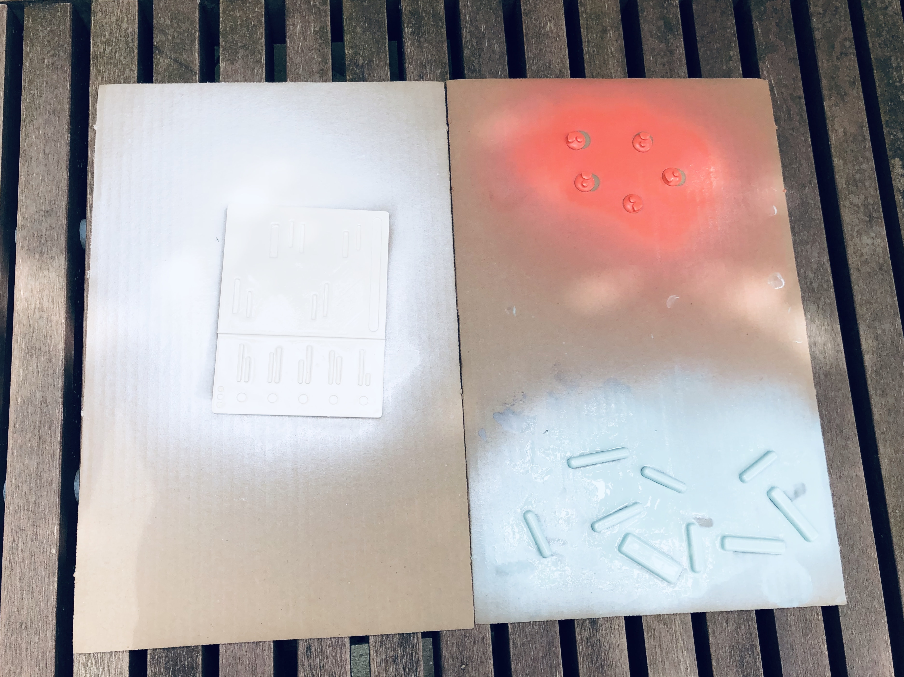After the paint dried, I then used super glue to connect the components to their connectors before snapping them onto the board.
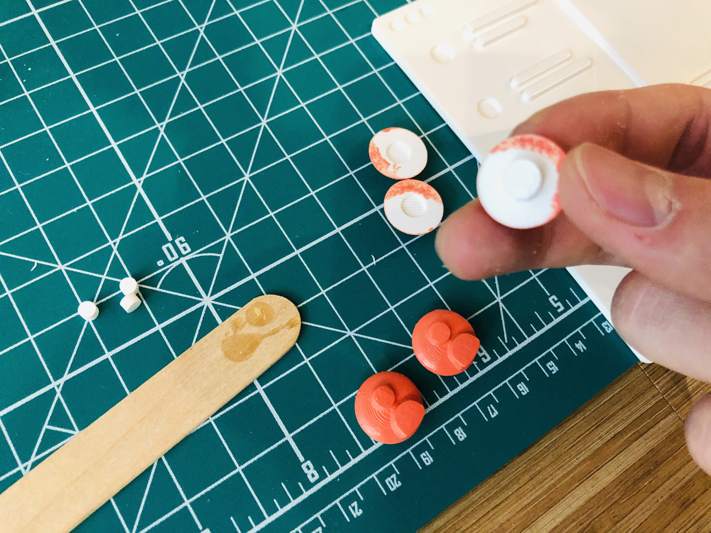 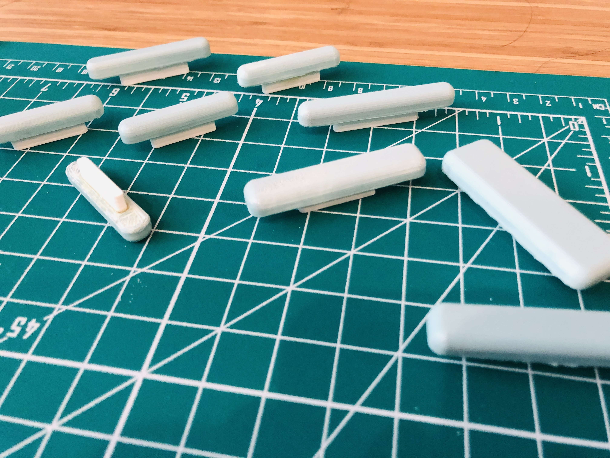And the final result looked kinda cool!
Given more time, I think I would experiement with using primer and filler spray with my sanding to create an even smoother surface before spray painting the print. I would also experiment with more color since I'm not a huge fan of the red-orange profile icons.